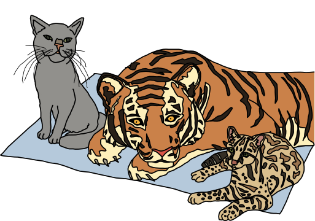

So easy your human companion could do it too!

JavaScript is a programming language or, in other words, a means by which a computer is instructed to do things. Just the same as one controls humans with hisses and meows, one controls computers with statements written in a programming language. All web browsers understand JavaScript and you can take advantage of that to make web pages do crazy things!
JavaScript started as a programming language to make internet pages more interactive. Nowadays JavaScript runs in more places than just web browsers - it runs on web servers, phones and even robots! This page will teach you some JavaScript basics so that you can get up and running in no time*!
* actual time: more than none. Probably an hour or two. Also since you are a cat you are less likely to run and more likely to lay around in the sun
Don't be a scaredy-cat

You will always land on your feet - even when programming! Unlike pawing over a glass of water on your laptop, nothing in these tutorials will damage your computer in any way, even if you mistype a command or click the wrong button. Like cats, computer programmers make mistakes all time: misspelling things, forgetting quotes or brackets, and being forgetful of how basic functions (and yarn, lasers) work. Programmers care more about making it work eventually rather than trying to make it work the very first time. The best way to learn is by making mistakes!
So don't be a scaredy-cat! The absolute worst thing that will happen is that you might have to refresh this page in your web browser if you get stuck. Don't worry though, this will happen very rarely - and we're talkin' 13-toed cat rare.